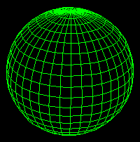
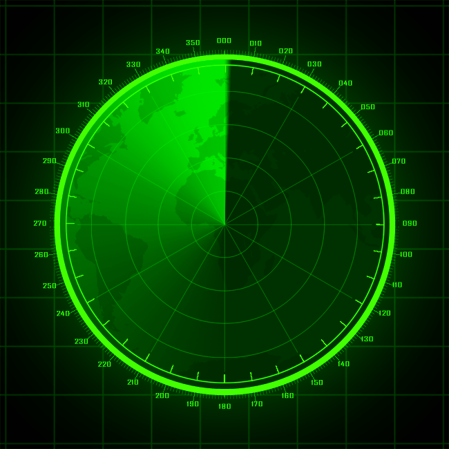
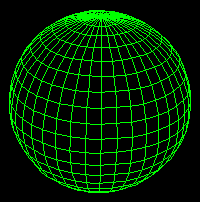
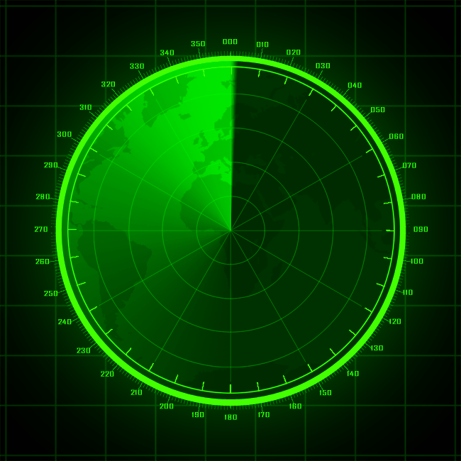

Bem-vindo ao Terminal Sentinel, você está acessando uma área de segurança máxima. Para restaurar o sistema, precisamos de indivíduos altamente qualificados para investigar e neutralizar o problema. Sua missão será participar do Projeto Sentinel, que visa recuperar dados corrompidos, proteger a rede contra ataques, e restaurar a funcionalidade do SCS.
Complete o formulário a seguir para demonstrar suas habilidades e qualificações. Apenas os candidatos mais adequados serão selecionados para essa operação crítica.
 


